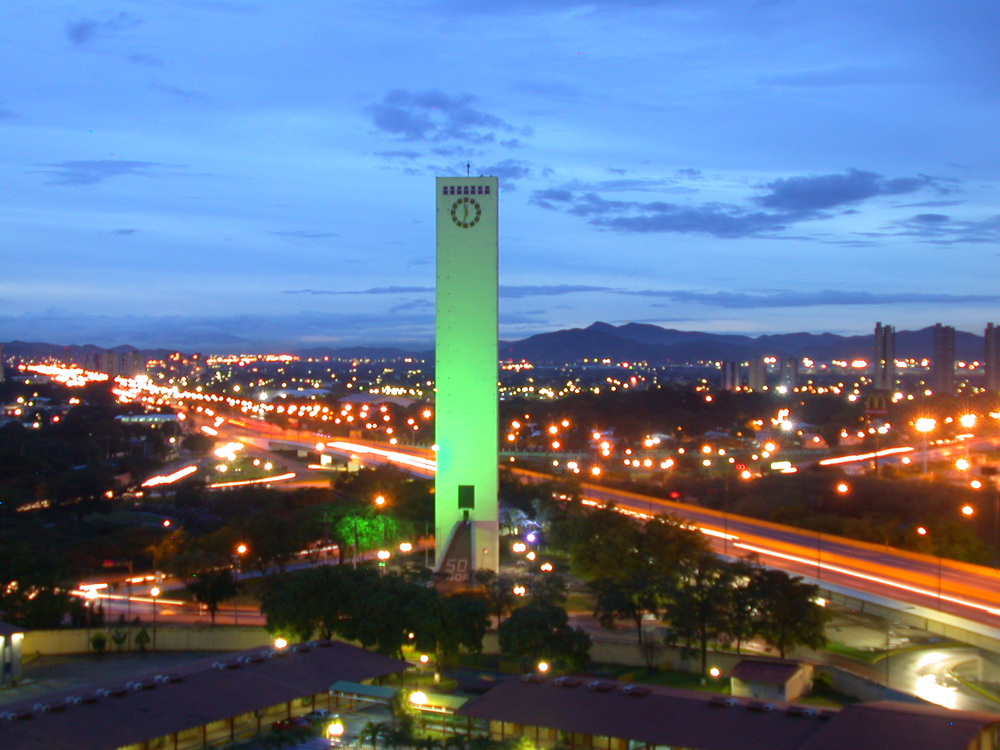
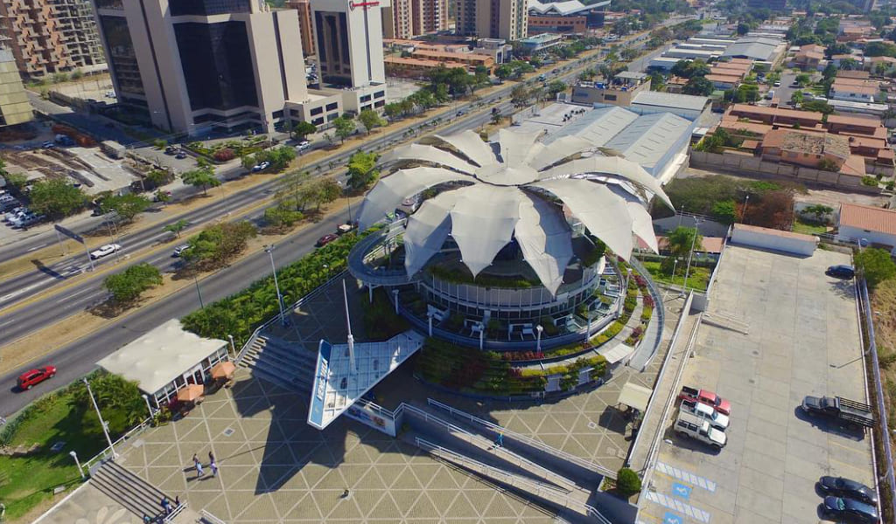
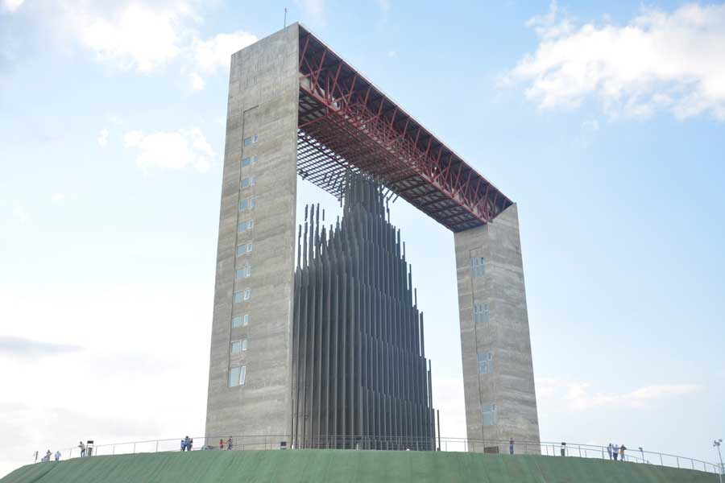

La ciudad y sus símbolos
No son atracciones.
El Obelisco, la Flor de Venezuela y el Manto de María no decoran Barquisimeto: la cuentan. Cada uno marcó una época — el cuatricentenario, el nuevo milenio, la fe de un pueblo — y juntos dibujan el horizonte de la ciudad crepuscular.
Esta página es una carta de amor a esos tres gigantes: con fotografía, datos y una flor que puedes abrir con tus propias manos, construida en 3D con código.

01 · El guardián
Obelisco de
Torre rectangular de concreto y acero que vigila la ciudad desde 1952. Su gran reloj marcó el pulso del cuatricentenario y su mirador regala la mejor vista del valle crepuscular.
~0 m
Altura
0
Inaugurado el 14 de septiembre
Reloj y mirador
Cuatricentenario de la ciudad
02 · La que florece
Flor de
Diseñada por Fruto Vivas e inspirada en la orquídea y los tepuyes. Sus 16 pétalos mecánicos se abren y cierran como un organismo vivo: representó a Venezuela en Hannover 2000 y floreció en Barquisimeto en 2008.
0
Pétalos móviles
0
Hannover, representa a Venezuela
0
Florece en Barquisimeto


03 · La que cobija
Manto de María
Una imagen cinética de la Divina Pastora tejida con 522 líneas tubulares y 3.772 piezas, suspendida entre dos torres sobre la colina. Inaugurada en 2016: el manto que arropa a la ciudad.
0 m
El conjunto
47,14 × 23,3 m
La imagen cinética
0
Piezas · 522 líneas
0
Inaugurado el 13 de enero
Interactivo · Three.js
La flor,
Arrastra para girar alrededor de ella y usa la rueda o dos dedos para acercar. Abre y cierra sus 16 pétalos: cada uno fue modelado con código, sin ningún programa de 3D.
Tu navegador no pudo iniciar WebGL.
Prueba con una versión reciente de Chrome, Edge, Firefox o Safari.
Arrastra para girar
Ambiente · Video IA
La ciudad
Fragmentos generados con inteligencia artificial para vestir la atmósfera crepuscular. Se reproducen solos al entrar en pantalla.